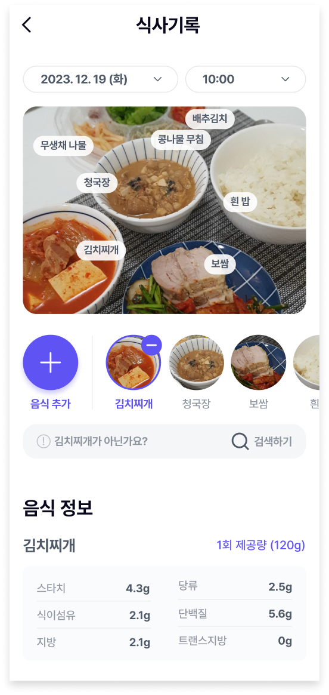

팔의 후면, 어깨 삼각근 아래를 동봉된 알콜솜으로 깨끗하게 닦아주세요.
삽입기구의 뚜껑을 돌려서 연 후, 센서팩과 결합해주세요.
소독한 부위에 직각으로 삽입기구를 대고, 힘껏 눌러주세요.
사용 완료한 센서는 센서의 접착테이프 가장자리를 잡고 한번에 천천히 떼어냅니다.
한번 사용한 센서는 재사용 불가로 플라스틱으로 폐기해야합니다.
휴대전화의 NFC 기능을 켜주세요.
프리스타일 리브레 앱을 실행한 후 휴대전화 뒷면의 NFC를 리브레 센서에 인식해주세요. ※ NFC 칩이 내장된 위치는 기종마다 다를 수 있습니다.
프리스타일 리브레 앱을 실행해주세요.
앱 화면에서 ‘스캔’ 버튼을 클릭 후 아이폰의 전면 상단부를 부착한 센서에 인식해주세요.
Tip 음식 사진을 찍어두세요!
식사 후 30분 간격 4회
30분 / 1시간 / 1시간 30분 / 2시간
메뉴 탭에서 > 를 클릭해주세요.
사진촬영 또는 미리 찍어둔 사진을 등록해주세요. ※ 사진을 등록하면 영양정보를 바로 확인할 수 있어요! 
혈당 스파이크란 식후 2시간 이내 혈당이 30mg/dL이상 급격하게 치솟았다가 떨어지는 현상을 말해요. 잦은 혈당 스파이크 발생은 체중 증가, 혈당 관리 이상 등의 건강 문제를 발생시킬 수 있어요. 웰다 방법을 실천하면서 혈당 스파이크에 대비하고 건강한 다이어트를 해보세요.
목표 건강혈당인 70~120mg/dL를 유지한 비율을 말해요. 웰다 방법을 잘 수행했다면 혈당 유지율은 높겠지만 잘못된 식사 습관, 잦은 혈당 스파이크 등으로 목표 혈당 유지율을 낮출 수 있어요.